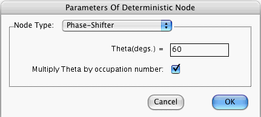

When you press the OK button in this window, the computer checks that the focus node has precisely one parent. If you put a check mark in the Multiply Theta by occupation number box, the computer will also check that the states of the parent node are non-negative integers.
If these conditions are satisfied, the above window closes. Furthermore, the states and amplitudes stored in memory for the focus node are changed. If the conditions are not satisfied, the above window remains open, the states and amplitudes are not changed, and a warning message appears on the screen.
Quantum Fog defines the set of states of the phase-shifter to be exactly the same as the set of states of its parent node.
Suppose Theta represents your entry to the first field of the above window.
Suppose you put a check mark in the Multiply Theta by occupation number box. When the state of the parent node is N, Quantum Fog assigns amplitude (1, N*Theta) (expressed in polar coordinates) to state N of the phase-shifter, and it assigns zero amplitude to all other states of the phase-shifter. Note that N must be an integer.
Suppose you don't put a check mark in the Multiply Theta by occupation number box. When the state of the parent node is STR, Quantum Fog assigns amplitude (1, Theta) (expressed in polar coordinates) to state STR of the phase-shifter, and it assigns zero amplitude to all other states of the phase-shifter. Note that STR need not be an integer.
More information about Phase-Shifters can be found in the document entitled "Quantum Fog Library Of Essays" that accompanies this manual.